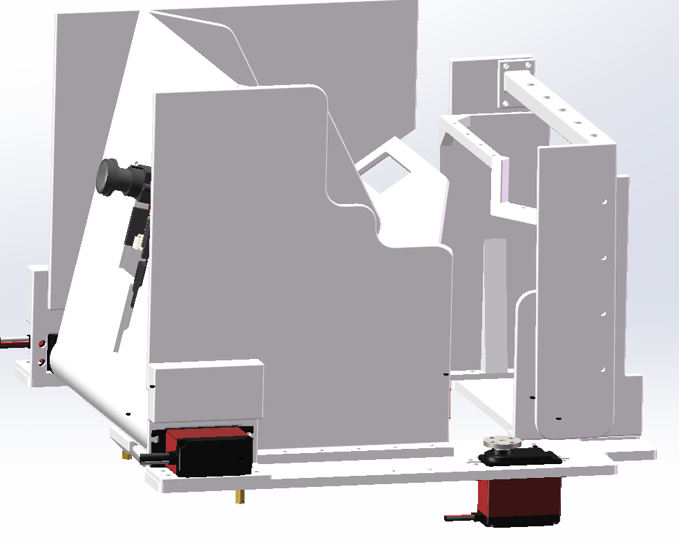

摆动 & 有限转动 Oscillation
什么时候需要这种运动？ 末端要在某个角度范围内来回摆动（如分拣挡板、机械臂肩关节、好蛋释放铰链板）。 通常单驱动源（一个舵机或电机）就能搞定。
优点
- 纯转动副，磨损小、寿命长
- 设计成熟，杆长变了运动规律就变，灵活度高
- 能精确控制末端的摆角范围与节奏
- 刚性好，能承受较大载荷
缺点
- 需要满足 Grashof 条件才有曲柄
- 运动到"死点"会卡死（需要飞轮或对称布置）
- 杆长一旦定死，运动规律不可调
适用场景
- 需要周期性摆动的释放/分拣机构
- 机械臂肩/肘关节（多用多组四杆串联）
- 履带悬挂、悬挂系统
- 压力机、剪切机

在我们的机器人上
好蛋释放机构 = 简化版铰链四杆：侧置舵机驱动铰链板绕固定轴旋转。
注意它只是"单臂铰链"——只有一个转动副+板本身作为连杆，是最简单的四杆退化情形。
想象再加一根连杆让舵机远离铰链点，就是标准曲柄摇杆了。